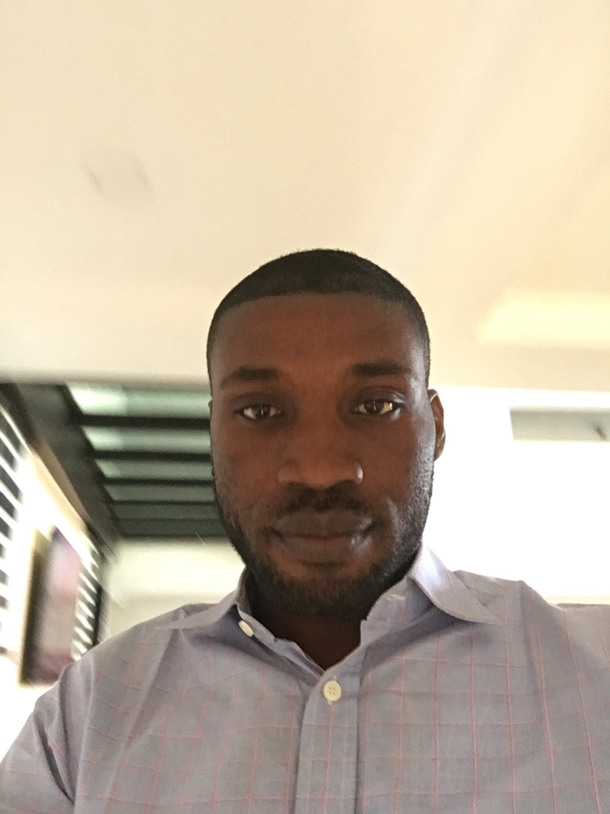

Akinlolu Ariyo | WDD130
Hello! My name is Akinlolu Ariyo and I am from Oyo state, Nigeria. I enjoy reading, watching football, swimming and playing outdoor games. I am a new student of BYU-Idaho and I am hoping to become one of the best deveolper in the world. I am relentless and determain to become what I want through Gods help. I have a strong sense of purpose and a willingness to work hard towards my goals. I am also able to adapt to change and overcome obstacles when they arise. I also have the zeal for achieving long-term success and overcoming obstacles. In summary, dedication and resilience are key traits that can help you achieve success in any area of life. By cultivating these traits, I can stay motivated, persevere through challenges, and achieve all my goals through Jesus Christ our Lord.